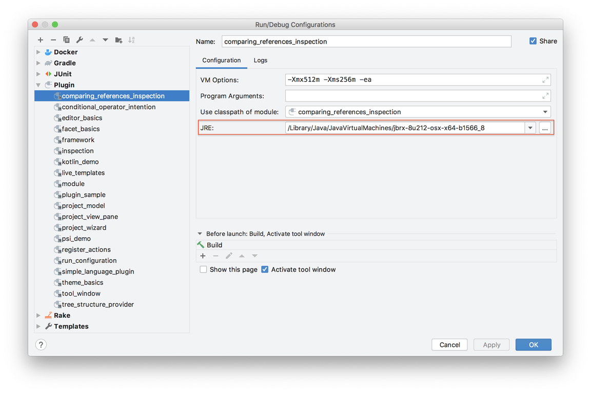

IDE Development Instances
A JetBrains feature for developing plugins is running or debugging a plugin project from within an IntelliJ Platform-based IDE such as IntelliJ IDEA. Selecting the Run menu for a DevKit-based project, or the runIde task for a Gradle-based project will launch a Development Instance of the IDE with the plugin enabled. This page describes how to control some of the settings for the Development Instance.
Using a JetBrains Runtime for the Development Instance
A common use case is to develop (build) a plugin project against a JDK, e.g. Java 8, and then run or debug the plugin in a Development Instance of the IDE. In such a situation, it is important the Development Instance uses a JetBrains Runtime rather than the JDK used to build the plugin project.
The JetBrains Runtime is an environment for running IntelliJ Platform-based IDEs on Windows, macOS, and Linux. It has some modifications by JetBrains, such as fixes for native crashes not present in official JDK builds. A version of the JetBrains Runtime is bundled with all IntelliJ Platform-based IDEs. To produce accurate results while running or debugging a plugin project in a Development Instance, follow the procedures below to ensure the Development Instance uses a JetBrains Runtime.
Determining a JetBrains Runtime Version
The JetBrains Runtime is determined from the JDK version used to build the plugin project.
If a plugin is being developed against the Java 8 SE Development Kit 8 for macOS, for example, jdk-8u212-macosx-x64.dmg.
(This example will use macOS, but Windows and Linux follow the same procedure.)
To acquire the compatible JetBrains Runtime:
- Go to the JetBrains Bintray site.
- Select the package name corresponding to the platform and SDK version.
In this case the package name is
jbrsdk8-osx-x64for jet brains runtime sdk version 8, maxOS x64 hardware. - On the macOS package page of the JetBrains Bintray site, select the Files menu.
- In the list of files, find the name that satisfies:
- The version and build number match the JDK used to build the plugin project.
For example,
jbrx-8u212-osx-x64matches the Java 8 JDK, build 212:jdk-8u212-macosx-x64. - Pick the highest JetBrains Runtime build number available.
For example, as of this writing, the file is
jbrx-8u212-osx-x64-b1566.8.tar.gz, meaning build 1566.8 for this JetBrains Runtime matching Java 8 JDK build 212.
- The version and build number match the JDK used to build the plugin project.
For example,
Setting a JetBrains Runtime for Gradle-Based Plugin Projects
By default, the Gradle plugin will fetch and use the version of the JetBrains Runtime for the Development Instance corresponding to the version of the IntelliJ Platform used for building the plugin project. In this situation no additional configuration is required.
Setting a JetBrains Runtime for DevKit-Based Plugin Projects
The Run Configuration for a DevKit-based plugin project controls the JDK used to run and debug a plugin project in a Development Instance.
The default Run Configuration uses the same JDK for building the plugin project and running the plugin in a Development Instance.
To change the runtime for the Development Instance, set the JRE: field in the Run Configuration edit dialog to use a downloaded JetBrains Runtime.
Continuing from the example above, the JRE: field is set to use jbrx-8u212-osx-x64-1566_8

Enabling Auto-Reload
When adding system property idea.auto.reload.plugins in the run configuration (DevKit-based) or runIde task (Gradle-based), dynamic plugins are reloaded automatically when their JARs are modified.
This allows a much faster development cycle by avoiding a full restart of the development instance after code changes.
For Gradle-based plugins using gradle-intellij-plugin 0.4.17 or later, this property is set automatically.
The Development Instance Sandbox Directory
The Sandbox Home directory contains the settings, caches, logs, and plugins for a Development Instance of the IDE. This information is stored in a different location than for the installed IDE itself.
Sandbox Home Location for Gradle-Based Plugin Projects
For Gradle-based plugins, the default Sandbox Home location is defined by the IntelliJ Platform gradle-intellij-plugin.
See Configuring a Gradle Plugin Project for more information about specifying a Sandbox Home location.
The default Sandbox Home location for Gradle-based plugin projects is:
- Windows
<Project Dir>\build\idea-sandbox - Linux or macOS
<Project Dir>/build/idea-sandbox
Sandbox Home Location for DevKit-Based Plugin Projects
For DevKit-based plugins, the default Sandbox Home location is defined in the IntelliJ Platform Plugin SDK. See specifying the Sandbox Home for DevKit Projects for more information. The default Sandbox Home directory location for DevKit-based plugin projects is:
- Windows:
<User home>\.<product_system_name><product_version>\system\plugins-sandbox\ - Linux:
~/.<product_system_name><product_version>/system/plugins-sandbox/ - macOS
~/Library/Caches/<product_system_name><product_version>/plugins-sandbox/
Development Instance Settings, Caches, Logs, and Plugins
Within the Sandbox Home directory are subdirectories pertaining to the Development Instance:
configcontains settings for the IDE instance.pluginscontains folders for each plugin being run in the IDE instance.system/cachesorsystem\cachesholds the IDE instance data.system/logorsystem\logcontains theidea.logfile for the IDE instance.
Each of these Sandbox Home subdirectories can be manually cleared to reset the IDE Development Instance. At the next launch of a Development Instance, the subdirectories will be repopulated with the appropriate information.